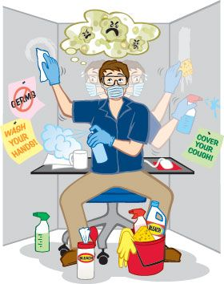

Living with OCD: The Art of Overthinking Everything
Introduction to OCD:
Picture this:
You enter a room and flip the light switch. You walk away. Nothing like flipping the switch for entertainment, though your brain whispers to you, supposedly to take care of you. Are you sure it's off? You'd better check again. You do. Not satisfied? Check again. Congratulations, your brain may be stuck in the "refresh" loop — and it's not because your Wi-Fi is bad.
This is the wacky world of Obsessive Compulsive Disorder, or OCD for short. It is the mental health condition that says, "Trust me, one more time won't hurt," while you are getting contradicted by your brain, EVERY. SINGLE. TIME.
What is OCD?
OCD is a chronic mental illness characterized by obsessions (unwanted intrusive thoughts) and compulsions (repetitive behaviors or mental activities carried out that are sometimes intended to neutralize the anxiety produced by the obsessions).
This is not simply about wanting things to be neat. It is the difference between needing to straighten up a painting on the wall (because you feel like your cat will explode if you don't) and casually straightening a painting on the wall for no reason other than that it could be neater. It is that dramatic.
According to the American Psychiatric Association, OCD affects roughly 2-3% of the population worldwide. The best way to articulate this concept is that, as the number of people in the concert increases, the chance that there is a mini control freak whispering to you in your ear 24/7 increases.
According to the DSM-5 (Diagnostic and Statistical Manual of Mental Disorders):
Obsessions are thoughts that are intrusive and produce suffering.
Compulsions are repetitive behaviors that one feels compelled to perform in response to the obsession.
Source: American Psychiatric Association (APA)
Obsessions
Obsessions are unwanted and persistent thoughts or urges that are distressing. It is like that one song that is stuck in your head, but instead of "Baby Shark," it is "Did I leave the door unlocked and doom the world?"
Common obsessions include:
- Fear of contamination (germs, dirt, random public restroom door handles)
- Doubting thoughts (Did I actually lock the door, or did I just dream it?)
- Order/symmetry (Something must be just right or life implodes)
- Taboo thoughts (involving sex, religion, or harm—yeah, the brain is wild)
- Fear of self-harm or harm to others (despite not wanting to)
Compulsions
Compulsions constitute the behaviors of individuals to alleviate the anxiety produced by their obsessions. Compulsions take the following forms:
- Excessive cleaning/washing
- Repeatedly checking doors, locks or appliances
- Counting, tapping or silently repeating words
- Organizing items in specific ways (sorry things that are asymmetrical)
- Mental compulsions (like silently praying or repeating words to "undo" bad thoughts)

Interesting fact
Most people with OCD are aware their thoughts are irrational, but that does not stop their brain from insisting it is so, like a toddler who has just ingested too much candy.
Why does it feel like I have Grandma's overprotective instincts stuck in my brain?
- Biological Factors: Brain imaging shows that the frontal cortex and basal ganglia are not working quite the way they should. There is also a serotonin imbalance (the neurotransmitter that says "let's chill").
- Genetics: If Uncle Bob had an obsession with counting every light bulb, it's possible you'll have obsession over something too.
Diagnosis
A diagnosis is made when:
- Obsessions and/or compulsions are time-consuming (more than 1 hour a day)
- They cause significant distress
- They interfere with daily functioning (work, school, relationships, Netflix)
- Are not better accounted for by another mental health condition
Mental health professionals use assessment tools including:
- The Yale-Brown Obsessive Compulsive Scale (Y-BOCS)
- Clinical interviews

Can OCD Be Cured?
Well, here's the tea: There isn't a "cure" in the fairy tale sense, but OCD is very treatable. A lot of folks manage symptoms very well and live bright, quirky, wonderful lives.
- Cognitive Behavioral Therapy (CBT): ERP (Exposure and Response Prevention) is the specific form of CBT you want. ERP is the gold standard that helps you face your fears and do so without giving in to compulsions. It's like fear factor, but for your brain.
- Medications: Medicines primarily are SSRIs (Selective Serotonin Reuptake Inhibitors) like:
- Fluoxetine (Prozac)
- Sertraline (Zoloft)
- Fluvoxamine (Luvox)
- Other options for severe OCD:
- Deep Brain Stimulation (DBS)
- Transcranial Magnetic Stimulation (TMS)
- Ketamine (still in research - not the rave kind)
- Mindfulness and Acceptance Techniques: There are newer approaches, such as Acceptance and Commitment Therapy (ACT) that we originally referred to as mindfulness, that help people sit with discomfort rather than fight it. It's like Jedi training for your brain.
OCD vs. OCPD
OCD is often confused with Obsessive Compulsive Personality Disorder (OCPD). Here is the quick cheat sheet:
| Feature | OCD | OCPD |
|---|---|---|
| Nature | Ego-dystonic (the person does not like the thoughts/behaviors) | Ego-syntonic (the person thinks their rigidity is just fine) |
| Characteristics | Involves distressing obsessions and compulsions | Involves a perfectionist/control-freak personality |
| Impact | Can cause very high anxiety | Can cause interpersonal problems, but usually not internal distress |
Misunderstandings & Misinformation
- "I am so OCD about cleaning." No. You are neat. OCD is an illness, not a quirk of personality.
- "People with OCD are just control freaks." Most people with OCD hate their compulsions; they feel they have to do them.
- "You can just stop doing the rituals." Oh really? Go ahead and try not blinking for a whole day. It feels like that.
- "Everyone is a little OCD." Nah, neatness or liking things a certain way does not equal OCD.
Living With OCD
OCD doesn't come with a brake, but it can be managed like a boss!
- Have a structured routine
- Don't avoid (yes, avoid is a thing)
- Join support (both online and support)
- Track your triggers in a journal (for the tracking)
- Be okay with setbacks (and there will be) and be kind to yourself
OCD is part of who you are, not all of who you are - unless you're a self-aware hand sanitizer.
Resources to Bookmark
- International OCD Foundation
- National Institute of Mental Health
- Mind UK
- Books:
- "Brain Lock" by Jeffrey M. Schwartz
- "The OCD Workbook" by Bruce Hyman & Cherry Pedrick
OCD is a real phenomenon. It is painful in many ways. It is not "quirky." But it is also manageable, treatable, and even - at times - laughable (in a "this-is-my-life-now?" sort of way.
Let's normalize talking about mental health, not to mention perhaps - just perhaps - normalizing leaving the light switch alone.